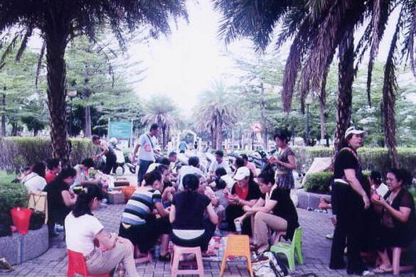
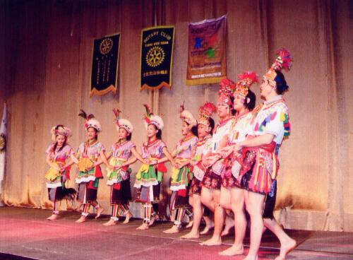
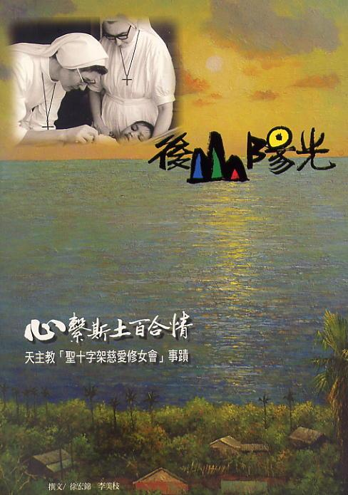
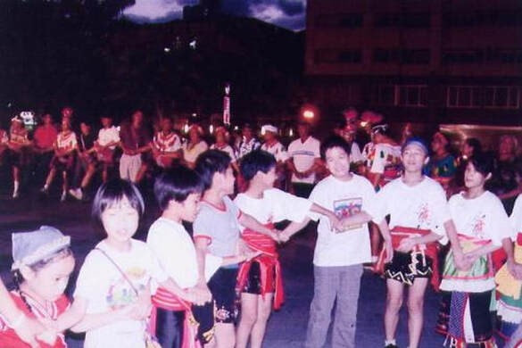
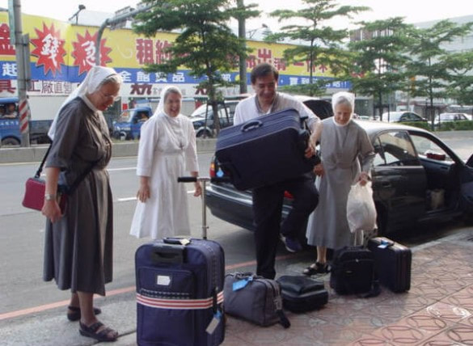
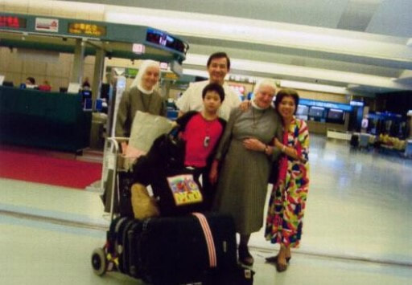
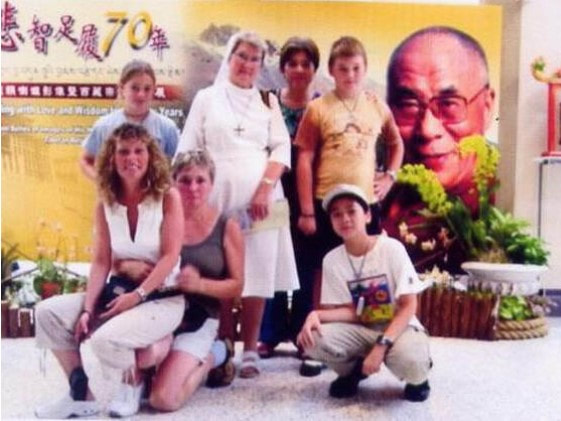
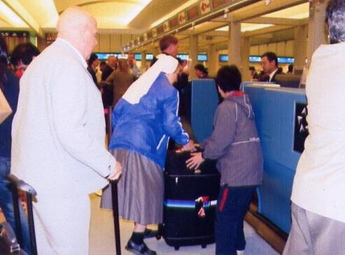
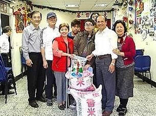

完整收錄大澳灣走過國際舞台、國家級展演與都會區克難排練的 18 篇珍貴歷史紀錄。
歷史紀錄導言：大澳灣文化工作團自創立以來，結合台東及旅居北部之原住民朋友，於都會區克難排練、培植文化幼苗，並多次代表台灣登上國際文化舞台。以下忠實收錄團隊創立以來 18 大代表性歷史活動紀錄，點擊照片皆可放大檢視原圖細節。
策劃執行參與「日本北海道白老愛努族國際原住民節活動」，展演台灣原住民傳統樂舞，進行深度的跨國南島與原住民族文化交流。照片記錄團隊與日本愛努族頭目及族群長老於慶典會場合影留念。

與日本愛努族頭目及族群長老合影
參與 2000 年「加拿大多倫多國際文化節」活動，策劃演出台灣原住民傳統樂舞，以昂揚的歌舞向國際社會傳遞台灣多元族群文化。照片記錄團隊與多倫多市長（後排中間站立者）及國際貴賓合影留念。

大澳灣團隊與多倫多市長（後排中間）於加拿大文化節合影
策劃台灣首辦「亞洲小兒科醫學會大會」之週年慶整場晚宴活動，於凱悅飯店（即君悅飯店）向來自 40 餘國之小兒科醫學界權威人士展示台灣原住民樂舞（包含全場舞台布景與文化意象設計）。當年隨同父母參與演出的小朋友（文化幼苗），如今已成長為團隊的中堅主幹。

亞洲小兒科醫學會大會晚宴盛大展演

當年隨同父母演出之文化幼苗，今已成為團隊主幹
（左）為支持台東基督教醫院偏鄉「行動醫療」巡迴服務，大澳灣團隊於台北 SOGO 百貨後方廣場演出原民樂舞協助募款義賣。（右）於台北微風廣場「台東農特產品暨生態旅遊展」展演，推廣台東原鄉文化與在地物產。

台東基督教醫院「行動醫療」募款義賣（SOGO廣場）與微風廣場展演
（左）策劃「文昌國小慶祝新校舍落成社區聯歡活動」，大澳灣團員與著名原住民歌者萬沙浪同台演出。（右）於圓山大飯店「若石學術研討會台北世界大會」盛大演出，並與現場來自世界各國的貴賓同歡熱烈互動。

文昌國小校舍落成社區聯歡（與歌手萬沙浪演出）及若石世界大會圓山飯店展演
「2005 年亞太地區扶輪社青年服務團大會」之開幕式，大澳灣策劃安排台東霧鹿布農族人於真理大學大禮堂演出傳統「報戰功」(Malstapang)，節目內容包含震撼國際、享譽世界天籟之聲的「八部合音」(Pasibutbut)。

台東霧鹿布農族於真理大學禮堂演出報戰功與八部合音 (Pasibutbut)
「2005 年亞太地區扶輪社青年服務團大會」之「文化之夜」，於真理大學活動廣場盛大演出。大澳灣帶領全場來自亞太各國的國際青年代表台上台下牽手同歌共舞，氣氛熱烈沸騰。

亞太扶青大會文化之夜，國際青年台上台下牽手共舞
2006 年順益機構創業 60 週年慶活動，於台北圓山大飯店 12 樓大會廳隆重演出。當日各界賓客雲集，讓來自日本、德國等跨國企業夥伴與國際貴賓共同分享了一場深具震撼力的台灣族群文化饗宴。

順益機構 60 週年慶圓山飯店 12 樓大會廳演出盛況
受邀於行政院新聞局「光影山林紀錄影片發表會」中，於台大國際會議廳演出台灣原住民傳統樂舞，並與現場國內外影視與文化貴賓牽手同歡共舞熱烈互動。
行政院新聞局光影山林發表會台大國際會議中心演出
（左）台北市名山里社區文化活動展演，現場觀眾與居民熱情投入參與。（右）台北市「名山里半月池荒地改造啟用典禮」演出，以文化活力點亮社區公共空間。

台北市名山里社區活動演出與半月池荒地改造啟用典禮
（左）2006 年「中華民國圖書館學會年會」於國家中央圖書館大禮堂演出。（右）2006 年「法雨梵音滿人間音樂會」於台北市政府親子劇場盛大展演。

中央圖書館學會年會展演與台北市府親子劇場法雨梵音音樂會
「台北永福扶輪社授證 13 週年慶晚會」，大澳灣團隊於台北晶華酒店盛大開場展演台灣原住民樂舞，感謝扶輪社友長期對原鄉學童教育與聖十字架慈愛獎學金之熱心贊助。

台北永福扶輪社授證 13 週年慶晚會演出
2006 年「松山區模範父親表揚大會」於台北市政府親子劇場隆重舉行，大澳灣文化工作團受邀演出原住民傳統歌舞，為全場模範父親與家庭獻上最崇高的敬意與祝福。

台北市政府親子劇場模範父親表揚大會展演
（左）2007 年「國際扶輪 3480 地區青年就業講座」於台北市議會大禮堂展演。（右）「台北文山扶輪社授證 18 週年慶」於紐約紐約購物中心演出，扶輪社長熱情加入同歡共舞。

台北市議會大禮堂扶青講座與紐約紐約文山扶輪社 18 週年慶
2007 年「瑞士商務辦事處 25 週年慶 Eliana Burki 音樂會」於台北自來水園區噴泉庭園盛大舉行。瑞士知名阿爾卑斯號角演奏家 Eliana 及其樂團表演阿爾卑斯長笛樂曲，大澳灣團隊受邀展演台灣原住民樂舞，演出後與瑞士商務辦事處副處長合影留念。

瑞士商務處 25 週年慶 Eliana Burki 音樂會與瑞士副處長合影
大澳灣團隊平時並無充裕經費支持，加上團員居住地點分散、工作時間各異，聚集在一起練習往往有實際困難。然而基於深厚文化使命感，團隊仍克服層層阻礙，利用休假在橋下、廟口、公園或學校等克難場地進行排練，堅持在都會區擔負起原住民樂舞文化傳承重任。

克服困難於公園、橋下等克難場地堅持排練樂舞
團隊除重視樂舞技藝之精進外，更高度重視年輕團員的精神紀律與為人處事態度，以激發青年對生活與族群文化尊嚴的自覺。每次活動演出之前皆聚首禱告，祈求圓滿達成文化任務；演出結束後則誠摯表達對主辦單位與協助人士的感恩，並祝禱彼此平安返家。

團隊活動演出前同心禱告與圓滿感恩
由於時代變遷，許多部落族人不得不離鄉背井到都會區謀生，部落傳統文化面臨嚴峻的斷層危機。大澳灣文化工作團長年致力於在都會區培植原住民文化幼苗，讓年輕一代深以祖先文化為榮。
※ 2008 年之後之各年度演出與社服紀實，請參閱「訊息分享」與「公益行腳」資料庫。

在都會區培植原住民文化幼苗，守護部落文化香火